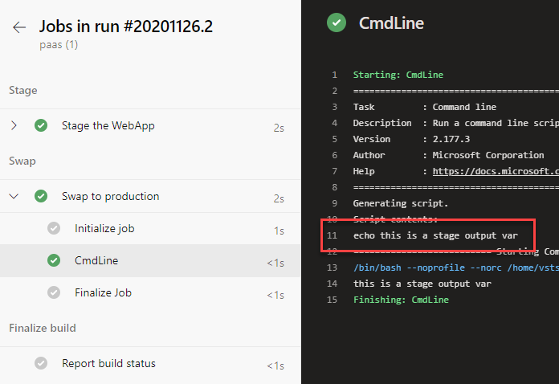

Last week I was delivering a workshop about “.NET Modernization In a Day” to show how to move from on-premise to the cloud. In order to show how to automate deployments to Azure using AzureDevops using WebApps slots to implement Blue-Green Deployment scenarios, I decided to create a multistage pipeline like this:
- Build the solution (.NET Core Web Application)
- Stage a web app deployment
- Swap to production slot
In the second stage, I use the ARM template task to deploy the infrastructure in Azure before deploy the web application to the staging slot, but the name of the Web App wasn’t available until the execution of the ARM task and also I’d like to use the name of the WebApp in the stage to swap to production.
If you want to use the output variables from the ARM template as a pipeline variables, you can use the next Powershell script:
param (
[Parameter(Mandatory=$true)]
[string]
$armOutputString
)
Write-Host $armOutputString
$armOutputObj = $armOutputString | convertfrom-json
Write-Host $armOutputObj
$armOutputObj.PSObject.Properties | ForEach-Object {
$type = ($_.value.type).ToLower()
$key = $_.name
$value = $_.value.value
if ($type -eq "securestring") {
Write-Host "##vso[task.setvariable variable=$key;issecret=true]$value"
Write-Host "Create VSTS variable with key '$key' and value '$value' of type '$type'!"
} elseif ($type -eq "string") {
Write-Host "##vso[task.setvariable variable=$key]$value"
Write-Host "Create VSTS variable with key '$key' and value '$value' of type '$type'!"
} else {
Throw "Type '$type' not supported!"
}
}
In the ARM task use the property deploymentOutputs:
- task: AzureResourceManagerTemplateDeployment@3
displayName: "Deploy ARM"
inputs:
...
deploymentOutputs: ArmDeploymentOutputs
And finally use the Powershell:
- task: PowerShell@2
displayName: "Set Arm outputs as variables"
inputs:
targetType: filePath
filePath: "$(Pipeline.Workspace)/Arm/ArmOutput.ps1"
arguments: "-armOutputString '$(ArmDeploymentOutputs)'"
timeoutInMinutes: 5
So now in my pipeline I can use the output variables in other tasks:
- task: AzureRmWebAppDeployment@4
inputs:
...
WebAppName: $(webApp)
Setting a variable from one stage to another
Now that we have ready the output variables from the ARM task, we are going to create a multistage pipeline to show you how to share a variable from one stage to another in deployment jobs:
trigger:
- master
pool:
vmImage: 'ubuntu-latest'
stages:
- stage: Stage
jobs:
- deployment: Staging
displayName: Stage the WebApp
environment: Staging
strategy:
runOnce:
deploy:
steps:
- bash: echo "##vso[task.setvariable variable=myStageOutputVar;isOutput=true]$myVar"
env:
myVar: 'this is a stage output var'
name: printvar
- stage: Swap
dependsOn: Stage
variables:
myVarfromStage: $[ stageDependencies.Stage.Staging.outputs['Staging.printvar.myStageOutputVar'] ]
jobs:
- deployment: Production
displayName: Swap to production
environment: Production
strategy:
runOnce:
deploy:
steps:
- script: echo $(myVarfromStage)
In the second stage (first deployment job), we define a new variable called myStageOutputVar
echo "##vso[task.setvariable variable=myStageOutputVar;isOutput=true]$myVar"
The key point is the isOutput=true instruction if you want to make this variable available to future stages.
Thanks to Luis Fraile who helped me to show how to pass variables to the Bash task using env prop.
Once we have defined the variable we need to use in the next stage (when we swap to production) because we need the name of the WebApp that ARM task created before. To use the varaible between stages we need to use stageDependencies property. To access the variable we need to reference in this way:
stageDependencies.stage.deployment.outputs['environment.taskName.variableName']
I our case:
stageDependencies.Stage.Staging.outputs['Staging.printvar.myStageOutputVar']
If you run the pipeline, you should see the output correctly:

Conclusion
In this post I’ve tried to show how to share variables between stages with deployment jobs and also how to setting pipelines variables from ARM task outputs.


Comments